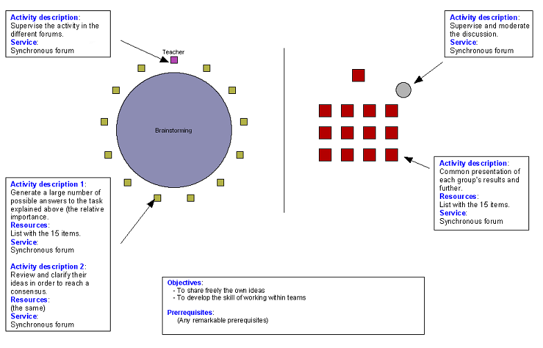

“You are members of a scientific team bound for a permanent research station on the surface of the Moon. Unfortunately, your lunar craft malfunctions, forcing an emergency landing in Mare Crisium, approximately 300 km from the research station at Mare Serenitatis. Both you and the research station are currently on the lighted surface of the Moon. During the landing process, much of the equipment aboard has been damaged, and since survival depends on reaching the research station, only the most critical items must be chosen for the trek. Below you will find a list of the 15 items left intact following the emergency landing. As a group, you must reach consensus regarding the relative importance of these items in your mission to reach help at the research station.”
[From http://www.csun.edu/~vceed002/geoscience/astronomy/moon/index.html, The Sourcebook for teaching science. Strategies, Activities, and Internet Resources].
